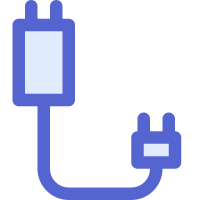

{{ $t('sshConfig') }} · {{ sshActiveSession.id }}
{{ $t('sftpTitle') }}
{{ $t('sftpDlDir') }}
{{ $t('noMessages') }}
{{ f.name }}
{{ f.isDir ? '' : formatSize(f.size) }}
{{ formatSize(dl.size) }}
{{ dl.progress || 0 }}%
{{ formatSize(dl.transferred||0) }} / {{ formatSize(dl.total) }}
{{ dl.status === 'done' ? $t('sftpDlDone') : $t('sftpDlFail') }}
{{ $t('sshNotConnected') }}
{{ $t('emptySshClient') }}
{{ $t('serverConfig') }} · {{ tcpActiveSession.id }}
{{ $t('connectedClients') }}
{{ c }}
{{ $t('select') }}
{{ $t('kick') }}
{{ $t('sendMessage') }}
{{ $t('target') }}：{{ tcpActiveSession.targetClient }}
{{ $t('messageLog') }}
{{ $t('text') }} HEX {{ $t('clear') }}
{{ $t('noMessages') }}
{{e.timestamp}}{{e.direction==='SENT'?'→':e.direction==='RECEIVED'?'←':'●'}}{{e.peer}}{{displayContent(tcpActiveSession, e)}}
{{ $t('emptyTcpServer') }}
{{ $t('connectionConfig') }} · {{ tcpCliActiveSession.id }}
{{ $t('sendMessage') }}
{{ $t('messageLog') }}
{{ $t('text') }} HEX {{ $t('clear') }}
{{ $t('noMessages') }}
{{e.timestamp}}{{e.direction==='SENT'?'→':e.direction==='RECEIVED'?'←':'●'}}{{e.peer}}{{displayContent(tcpCliActiveSession, e)}}
{{ $t('emptyTcpClient') }}
{{ $t('udpServer') }} · {{ udpActiveSession.id }}
{{ $t('knownClients') }}
{{ c }}
{{ $t('select') }}
{{ $t('forget') }}
{{ $t('sendDatagram') }}
{{ $t('target') }}：{{ udpActiveSession.targetClient }}
{{ $t('messageLog') }}
{{ $t('text') }} HEX {{ $t('clear') }}
{{ $t('noMessages') }}
{{e.timestamp}}{{e.direction==='SENT'?'→':e.direction==='RECEIVED'?'←':'●'}}{{e.peer}}{{displayContent(udpActiveSession, e)}}
{{ $t('emptyUdpServer') }}

{{ $t('tabUdpClient') }}{{ $t('udpClient') }} · {{ udpCliActiveSession.id }}
{{ $t('sendDatagram') }}
{{ $t('messageLog') }}
{{ $t('text') }} HEX {{ $t('clear') }}
{{ $t('noMessages') }}
{{e.timestamp}}{{e.direction==='SENT'?'→':e.direction==='RECEIVED'?'←':'●'}}{{e.peer}}{{displayContent(udpCliActiveSession, e)}}
{{ $t('emptyUdpClient') }}